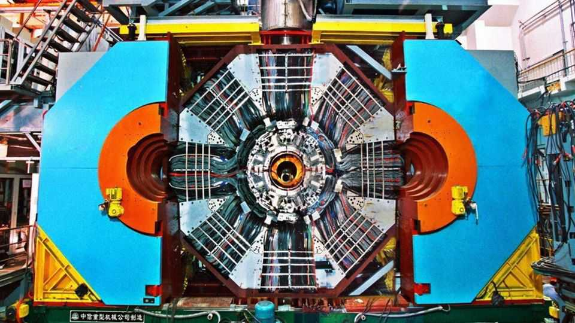

Physicists nab the elusive glueball
Make it stick

Aug 20th 2026
A NEW subatomic particle has made the leap from theory to reality. So say the scientists of the Beijing Spectrometer III (BESIII), a Chinese physics experiment. Speaking on their behalf at the International Conference on High Energy Physics (ICHEP) on August 5th, Jin Shan, of Nanjing University, announced that the team have discovered a glueball—a hitherto hypothetical particle that is unlike any which physicists have seen before.
The nuclei of atoms are held together by a phenomenon called the strong nuclear force. What better name, then, for the particle responsible for carrying this force than the “gluon”? Gluons interact with quarks, another type of fundamental particle, wrangling them into pairs and triplets to create protons, neutrons and other such “composite” particles. But gluons also interact with other gluons, raising the possibility of gluons gluing themselves together into a different kind of composite particle: the glueball.
Physicists’ theories predict glueballs. Finding one is another matter, since those theories also suggest glueballs will be difficult to distinguish from the torrents of more mundane quark-based particles produced in machines like the Beijing Electron-Positron Collider II, to which BESIII is attached. Almost half a century of searching has left researchers empty-handed.
No more, say the operators of BESIII. In 2011 a new particle, called X(2370), showed up in their detectors. It looked a lot like a glueball, but other interpretations were possible. So the team got to work on ruling them out. They have spent the intervening years analysing over 10bn processes in which X(2370) could play a role. The result—published online in July and presented at ICHEP by Dr Jin—is a complete picture of the new particle’s properties. The team is now convinced it is a glueball. “No other interpretation can explain all these properties simultaneously,” says Dr Jin.
Detecting the glueball—if it has, indeed, been found—is not just a matter of physicists adding a new specimen to their by now extensive collection. Its discovery will provide valuable data to test the theory behind the strong force. That theory, good as it is, contains many mysteries. One is how the strong force generates mass—for gluons have no mass, but glueballs do. On the answering of such questions, the glueball’s discovery could tip the scales. ■